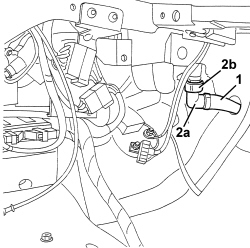

5040C68 CONDENSATE DRAIN PIPE AND ANITI-CONDENSATION FILTER - ARRANGE
- Path
- Procedures > 50 AUXILIARY UNITS > 5040 AIR CONDITIONING CASING AND COMPONENTS > 5040C AIR CONDITIONING CASING AND COMPONENTS > 5040C68 CONDENSATE DRAIN PIPE AND ANITI-CONDENSATION FILTER - ARRANGE
- Kind
- repair procedure (removal / refitting; the operation number is the code)
- Applies to
- all engines; all production periods
- Interactive page
- https://sloeber94.github.io/elrnDB-aBrrSpdr/en/#/946002282
Applies to: all engines; all production periods
 Removing
Removing
 Refitting
Refitting- Work on the passenger side.
Op. 7045A10 FRONT SEAT (ONE), LEFT OR RIGHT - R.R.
Op. 7040A65 CONSOLE SIDE CLOSING (ONE) - R.R.
1. Check that the condensate drain pipe is correctly fitted in its housing and intact.
2. If necessary, remove condensate drain pipe (2a) after loosening retaining collar (2b).

Applies to: all engines; all production periods
Refitting
Removing- Check that the condensate drain pipe is not damaged.
- Remove the condensation drainage pipe.
- Tighten the retaining band.